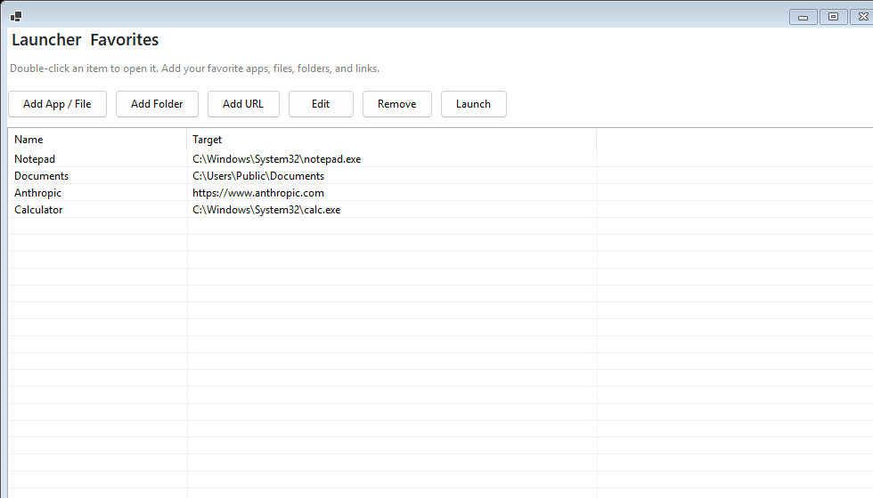
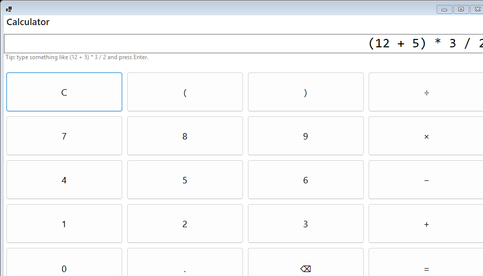
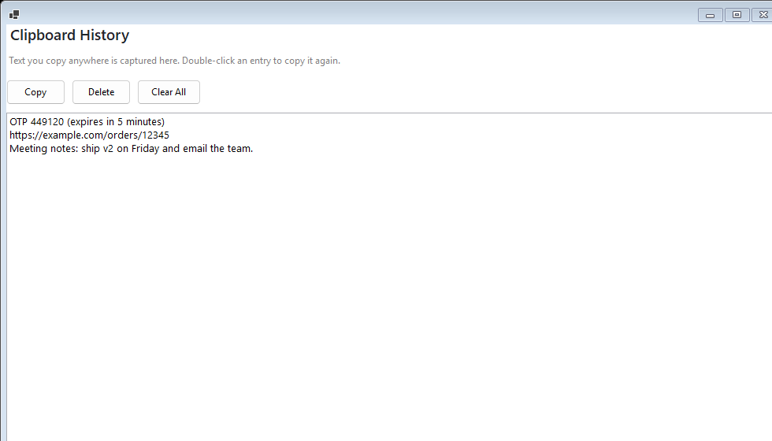
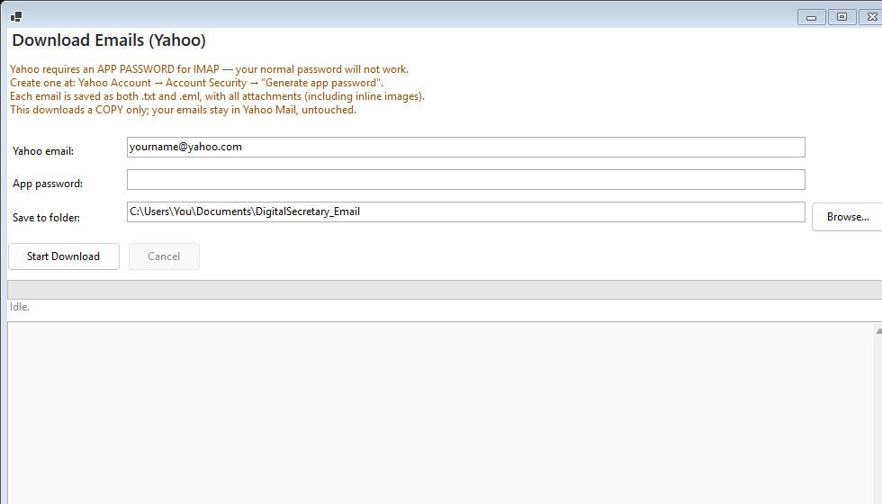
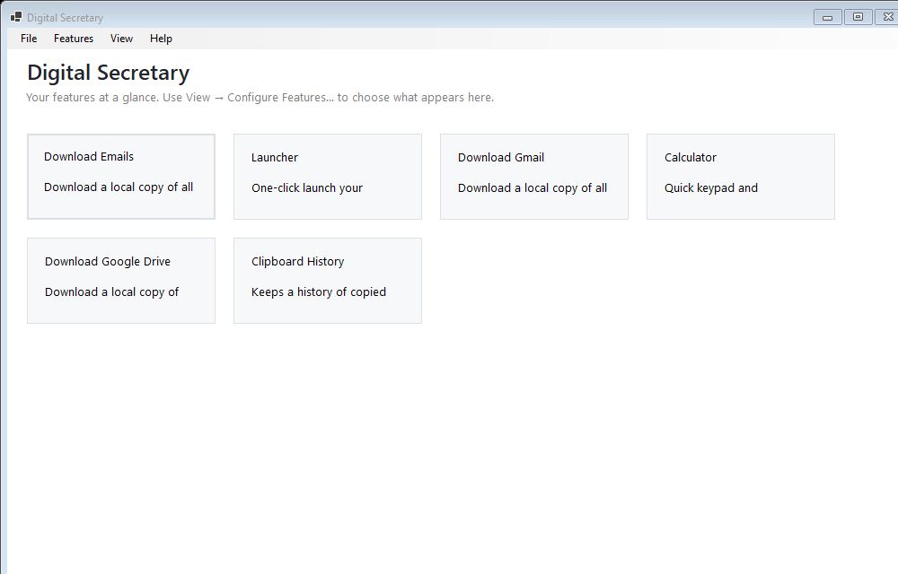

A pluggable personal toolbox for Windows — grow it one independent feature at a time.
Self-contained · no .NET install needed · Windows 10/11 (x64). Unzip & run, or use the included installer.
Handy day-to-day tools in one window. Show or hide each one; add more by request.

One-click open your favorite apps, files, folders, and links.

Keypad plus a type-an-expression evaluator.

Re-paste anything you copied earlier.

Save a local copy of all your Yahoo Mail — emails and attachments.
A dashboard of tiles plus a menu — you choose what shows where.

Every feature is an independent plugin, and quality is enforced on every build.